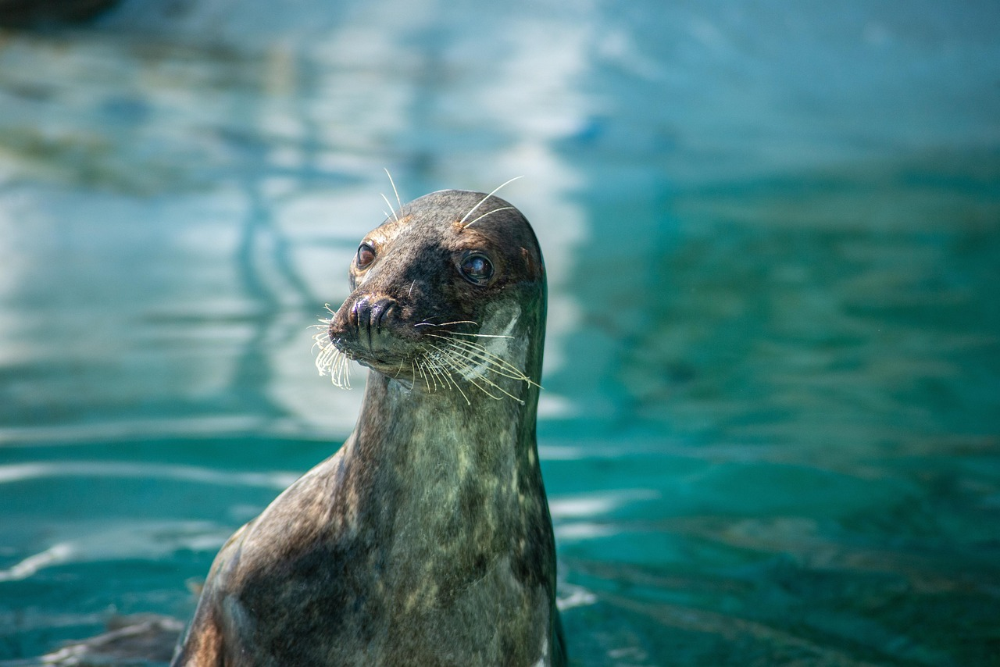
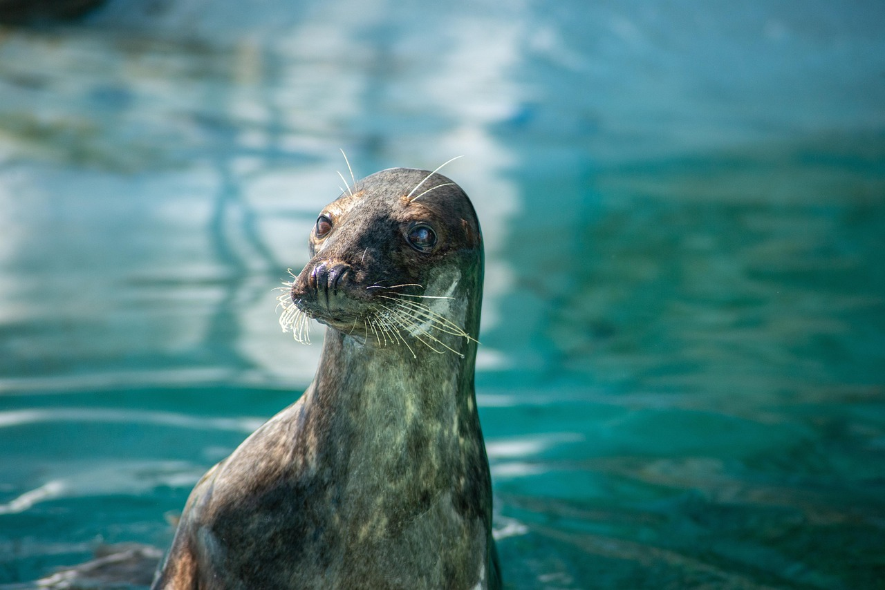

Internal Image
 

External Images

Animated Images

Image as Links
Floating Images
 otter, (subfamily Lutrinae), any of 13 species of semiaquatic mammals that belong to the weasel family (Mustelidae) and are noted for their playful behaviour. The otter has a lithe and slender body with short legs, a strong neck, and a long flattened tail that helps propel the animal gracefully through water. Swimming ability is further enhanced in most species by four webbed feet. Two species are marine, and the others living predominantly in fresh water. Otters range in size from 3 kg (6.6 pounds) in the Asian small-clawed otter (Aonyx cinereus, formerly Amblonyx cinereus) to 26 kg (57 pounds) in the giant otter (Pteronura brasiliensis) and 45 kg (99 pounds) in the sea otter (Enhydra lutris). Fur colour is various shades of brown with lighter underparts.
otter, (subfamily Lutrinae), any of 13 species of semiaquatic mammals that belong to the weasel family (Mustelidae) and are noted for their playful behaviour. The otter has a lithe and slender body with short legs, a strong neck, and a long flattened tail that helps propel the animal gracefully through water. Swimming ability is further enhanced in most species by four webbed feet. Two species are marine, and the others living predominantly in fresh water. Otters range in size from 3 kg (6.6 pounds) in the Asian small-clawed otter (Aonyx cinereus, formerly Amblonyx cinereus) to 26 kg (57 pounds) in the giant otter (Pteronura brasiliensis) and 45 kg (99 pounds) in the sea otter (Enhydra lutris). Fur colour is various shades of brown with lighter underparts.